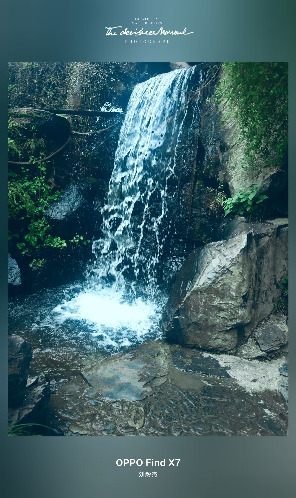

这一页看什么
看水、看桥、看庭院湿气里的层层绿意
画面大多是湿润、沉静、贴近水边的。诗词也尽量选了清泉、空山、苔痕、 禅院这一类意象，让图与句不是简单拼贴，而是相互照应。
婺源图集
十景并陈，图下题诗
页末留白
回到首页

这一页把最初那组风景收拢成一篇完整日志。不是只摆照片， 而是让瀑声、石径、桥影、苔痕都各自带着一句诗，一起留下来。
画面大多是湿润、沉静、贴近水边的。诗词也尽量选了清泉、空山、苔痕、 禅院这一类意象，让图与句不是简单拼贴，而是相互照应。